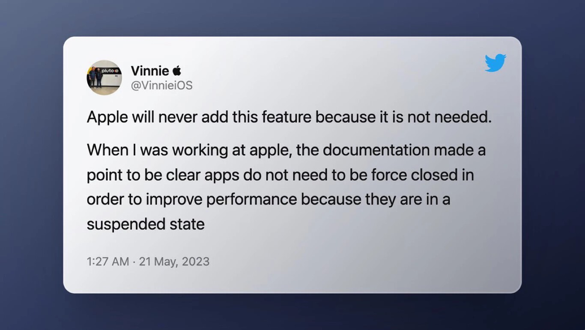

¿Cerrar aplicaciones en el iPhone para ahorrar batería? Aquí te explicamos por qué no es efectivo.

Imagina este escenario: tomas el iPhone de tus padres y te encuentras con un mar de aplicaciones abiertas en segundo plano. ¿Cuál sería tu primera reacción? Seguramente, la tentación de cerrarlas todas para liberar memoria y ahorrar batería sea muy fuerte. Sin embargo, aquí radica el primer mito a desmentir: ni cerrar aplicaciones ni ahorrar memoria son conclusiones acertadas. Esta discusión lleva años sobre la mesa, pero tanto Apple como sus expertos han sido categóricos al respecto: cerrar aplicaciones en segundo plano no mejora la vida útil de la batería ni la experiencia del usuario. Un exingeniero de Apple lo dejó bien claro en Twitter hace un año, afirmando que la empresa nunca implementaría una opción para cerrar todas las aplicaciones abiertas, ya que simplemente no es necesario. Y esta postura no es nueva: Craig Federighi, la mente detrás del desarrollo de iOS, había enfatizado previamente que no es necesario cerrar aplicaciones en segundo plano.
¿Entonces, cuándo es apropiado cerrar una aplicación? Según las páginas de soporte de Apple, solo deberías forzar el cierre de una aplicación si se comporta de forma errática o se cuelga. La regla es simple: "cierra una app solo si no responde". Lawrence Finch, un usuario, resumió brillantemente por qué cerrar aplicaciones no aporta ningún beneficio en términos de ahorro de batería. ¿Por qué? Primero, porque las aplicaciones en segundo plano no están "corriendo", sino suspendidas. Cerrarlas en realidad empeora la autonomía, ya que el dispositivo consume más energía al cargar una aplicación desde cero que al "despertarla" desde su estado suspendido. Además, cerrar aplicaciones no acelera el dispositivo; de hecho, puede ralentizarlo, ya que iniciar una aplicación desde cero lleva más tiempo que hacerlo desde su estado suspendido. Por último, el cierre de aplicaciones no libera memoria RAM, ya que iOS cuenta con eficientes mecanismos de gestión de memoria. En resumen, cerrar aplicaciones en segundo plano no solo es innecesario, sino que puede ser contraproducente.
La próxima vez que te encuentres con un montón de aplicaciones abiertas en segundo plano en el iPhone de tus padres, detente un momento y considera esta perspectiva. Es tentador pensar que cerrar todas esas aplicaciones mejorará el rendimiento del dispositivo y prolongará la duración de la batería. Sin embargo, como hemos aprendido, esa no es la mejor estrategia. Dejarlas estar, en realidad, es la opción más inteligente y eficiente. Piénsalo de esta manera: cada aplicación que ves en segundo plano está en un estado de suspensión, listas para ser utilizadas nuevamente en cuanto las necesites. Cerrarlas todas solo las forzaría a reiniciarse por completo cuando las vuelvas a abrir, consumiendo más energía y ralentizando el sistema en el proceso. Es como apagar y encender el motor de un coche cada vez que necesitas avanzar un poco, en lugar de mantenerlo en ralentí listo para acelerar cuando sea necesario. Además, el cierre indiscriminado de aplicaciones no solo es innecesario, sino que puede tener consecuencias no deseadas. Al hacerlo, podrías interrumpir procesos importantes en segundo plano, como actualizaciones de aplicaciones, descargas pendientes o notificaciones importantes, lo que podría afectar negativamente la experiencia de usuario. Entonces, la próxima vez que sientas la tentación de limpiar todas esas aplicaciones abiertas en segundo plano, recuerda que tu iPhone está diseñado para gestionarlas de manera eficiente. Confía en el sistema y deja que haga su trabajo. Al hacerlo, no solo conservarás la vida útil de la batería, sino que también mantendrás un rendimiento óptimo en tu dispositivo, sin sacrificar la comodidad ni la funcionalidad. En resumen, ¡dejarlas estar es la mejor opción para ti y para tu iPhone!